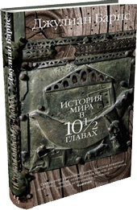
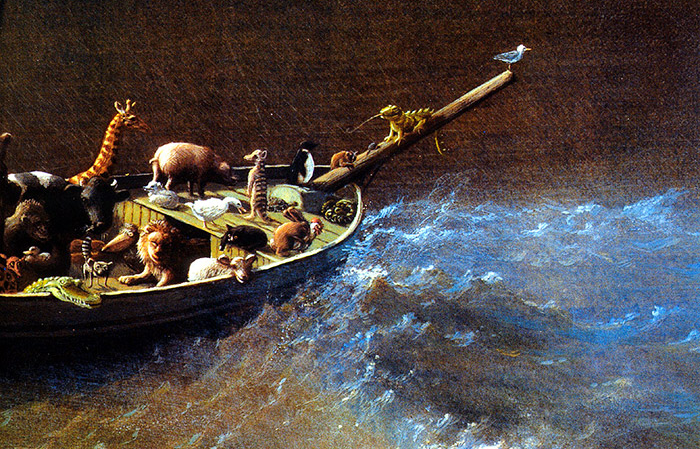
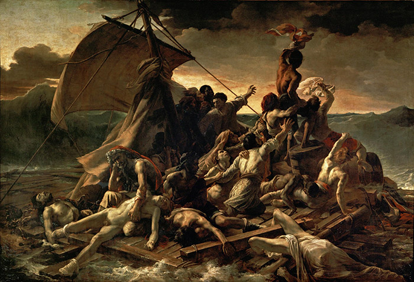
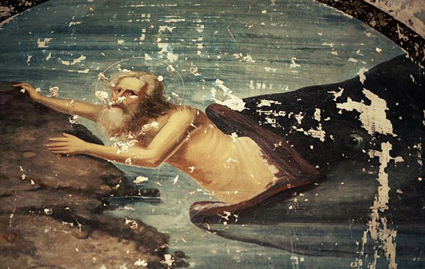
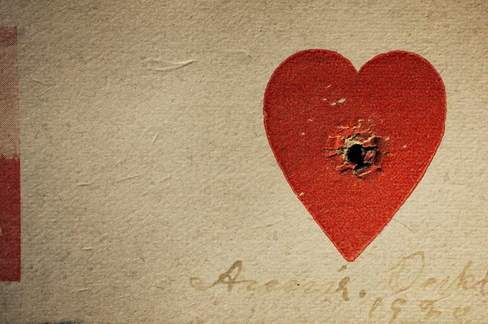

"История мира в 10½ главах"
“A History of the World in 10½ Chapters”
Краткое содержание:
История мира в 10½ главах — постмодернистский роман Джулиана Барнса, написанный в 1989 году. Он состоит из рассказов, объединённых едиными мотивами и образами (море, корабль (корабль — Ковчег — дом), текучая вода и время, мотив деления на чистых и нечистых). Действие происходит не в хронологическом порядке.
⚓ 1 глава — «Безбилетник» — легенда о всемирном потопе, рассказанная личинкой червя древоточца.  ⚓ 2 глава — «Гости» — Современный мир, захват террористами туристического лайнера. ⚓ 3 глава — «Религиозные войны» — 16 век, церковный суд над червями-древоточцами. ⚓ 4 глава — «Уцелевшая» — О женщине, которая теряет рассудок после Чернобыльской аварии. ⚓ 5 глава — «Кораблекрушение» — 1816 год, реальное кораблекрушение и картина Жерико.  ⚓ 6 глава — «Гора» — паломничество Аманды Фергюсон на Арарат. ⚓ 7 глава — «Три простые истории»: 1 история — о человеке, дважды спасшемся с Титаника. 2 история — о человеке, проглоченном китом. 3 история — о депортируемых из Германии евреях.  ⚓ 8 глава — «Вверх по реке» — письма о съемочном процессе в джунглях. ⚓ ½ глава — «Интермедия» — рассуждения самого автора о любви и взаимоотношениях между мужчиной и женщиной.  ⚓ 9 глава — «Проект Арарат» — поиски Ковчега американским астронавтом. ⚓ 10 глава — «Сон» — модернизированный рай, границы между раем и адом стерты, ад — парк аттракционов.
О чем книга:
Итак, 10 глав книги ― это целая галерея историй: вымышленных, подлинных, наполовину подлинных, наполовину вымышленных, но представленных особым образом и освещенных бриллиантовой авторской иронией, а значит, и созданных заново Барнсом.
Каждая глава здесь — еще и упражнение в писательском мастерстве. Барнс словно бросает вызов литературе — он, кажется, поставил себе цель — написать книгу, использовав все возможные стили и приемы письма; и его метод в данном случае отлично работает на главную идею — заставить нас, читателей, взглянуть на историю иначе, под неожиданным углом, — не как на стройную, обхваченную кожаным переплетом, энциклопедию, где все события разбиты на параграфы и пронумерованы, но — как на хаотичный набор слухов и домыслов, рассказанных случайными свидетелями (как тут не вспомнить пословицу: «врет как очевидец»?).
«История? Всего лишь эхо голосов во тьме <...> Мы лежим здесь на больничной койке настоящего (какие славные, чистые у нас нынче простыни), а рядом булькает капельница, питающая нас раствором ежедневных новостей. Мы считаем, что знаем, кто мы такие, хотя нам и неведомо, почему мы сюда попали и долго ли нам придется еще здесь оставаться. И, маясь в своих бандажах, страдая от неопределенности, — разве мы не добровольные пациенты? — мы сочиняем. Мы придумываем свою повесть, чтобы обойти факты, которых не знаем или не хотим принять...»
И все же, «История мира...» — это не просто постмодернистская забава. Архитектура романа гораздо сложнее и интереснее, ведь Барнс не ограничивается сатирой и отрицанием всего и вся — «не верю, не было, невозможно». Помимо прочего, он четко иллюстрирует простую мыль: о том, что время — не самый лучший показатель качества идеи, и устоявшиеся моральные нормы могут быть так же ошибочны и часто гораздо более жестоки, чем новые веяния; и вот в этих противоречивых тезисах Барнс пытается найти ориентир, в соответствии с которым людей не пришлось бы делить на «чистых» и «нечистых», «верных» и «неверных».
Как любой мыслящий человек, он не может жить без ответов; но стандартные отговорки его не устраивают: Заповеди? — Сколько людей погибло ради их соблюдения?
Рай? — ох, не смешите меня: самое скучное место на свете!
И в этом разрезе «История мира...» — как бы размышление от противного, поиск смысла за пределами протоптанных и утвержденных христианством (и вообще — догмами) дорожек. И еще — попытка описать то чувство, которое испытывает каждый из нас, вдруг осознав, что не бессмертен; и потому мотив одинокого судна в открытом море — мотив кораблекрушения — здесь ключевая тема: куда мы плывем? А есть ли там земля вообще, за горизонтом? И если есть — то будут ли рады нам ее обитатели? И хватит ли у нас сил и — главное — смелости достичь берега и ступить на него? Ведь все на самом деле очень просто: история каждый день учит нас чему-то — это мы, двоечники, вечно прогуливаем ее уроки.
Издательства:
Об авторе:
Лауреат Букеровской премии Джулиан Барнс — один из самых ярких и оригинальных прозаиков современной Британии, автор таких международных бестселлеров, как «Шум времени», «Предчувствие конца», «Англия, Англия», «Попугай Флобера», «Любовь и так далее», «Метроленд» и многих других.
Возможно, основной его талант — умение легко и естественно играть в своих произведениях стилями и направлениями. Тонкая стилизация и едкая ирония, утонченный лиризм и доходящий до цинизма сарказм, агрессивная жесткость и веселое озорство — Барнсу подвластно все это и многое другое.
В романе «История мира в 10½ главах» он доводит мастерство перевоплощения до апогея: он говорит голосом насекомого, «зайцем» проникшего на Ноев ковчег, и астронавта, отправляющегося искать этот ковчег на гору Арарат, он имитирует судебную хронику Средневековья и дотошно воспроизводит истинную подоплеку знаменитого полотна Жерико «Плот “Медузы”», и показывает ужас мгновенного перехода от благополучной жизни к ситуации, когда что ни сделай — будет только хуже…
Отзывы:
Достоинства: Глубоко, сильно, эпично
Недостатки: Нет
"Это первый роман, который я читала у Джулиана Барнса и самый лучший. Да, книга большая, но какая задумка! Он хотел показать историю нашего мира всего в 10 главах! Как вместить все в одну книгу? Не каждый автор возьмет на себя такую задачу. Поэтому я считаю, что Барнс - смелый писатель и очень талантливый.
Каждую из глав книги можно считать самостоятельным произведением, но только вместе они дают нам такой потрясающий эффект.
Пересечение тем истории, любви, искусства, катастрофы, выживания и веры - вот о чем Пишет Джулиан Барнс, не забывая применять тонкий английский юмор.
Определенно точно этот роман нужно читать и наслаждаться им!"
Достоинства: интересная подача, нетривиальные суждения, бездна юмора
Недостатки: затянутость некоторых глав
"Именно с этого романа началось мое знакомство с творчеством Джулиана Барнса- английского писателя, которого называют классиком современности.
Мне с первых же строк пришелся по вкусу его изящный слог и бесподобная ирония и он безоговорочно стал одним из моих любимых писателей.
Роман состоит из 10 глав, очень разных и по стилю и по манере изложения, явной взаимосвязи между ними нет, но было интересно находить отклики одной главы в другой.
Вот мои личные предпочтения, чем меня Барнс удивил: ироничным подходом к вопросам религии в главе «Безбилетник» (бездна юмора, над некоторыми фразами смеялась до слез); пронзительными строками о любви в главе "Интермедиа" (мне хочется, чтобы эту главу прочитали все!). "